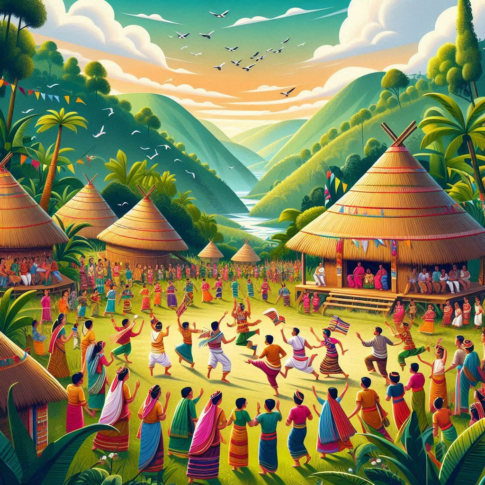
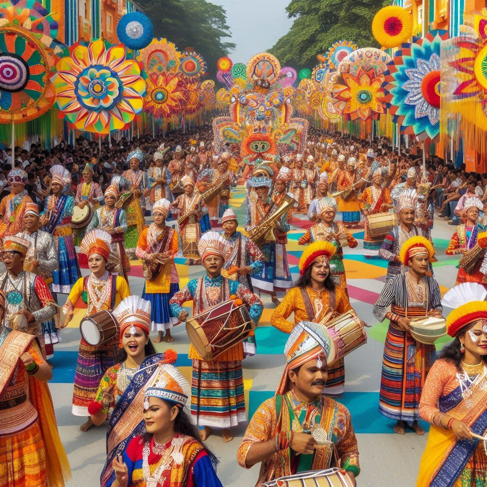

Time of Celebration: April (mid-April, during the Assamese New Year)
Significance: Bihu is the most important and widely celebrated festival in Assam, marking the Assamese New Year and the arrival of spring.
Highlights: Three types of Bihu (Rongali, Kongali, Bhogali). Traditional music and dance, special dishes like pithas, and community gatherings.
2. Bihu (Bhogali Bihu)
Time of Celebration: January (Makar Sankranti)
Significance: Bhogali Bihu celebrates the end of the harvest season, with feasting and community bonfires.
Highlights: Mejis (bamboo huts) are built, and food is offered to the fire. Traditional dishes like pithas, larus, and rice beer are prepared.
3. Bihu (Kongali Bihu)
Time of Celebration: October (mid-October)
Significance: Kongali Bihu is a solemn festival marking the beginning of the harvest season.
Highlights: Oil lamps are lit in paddy fields, and prayers are offered for a good harvest. It’s a quieter version of Bihu with fewer celebrations.
4. Durga Puja
Time of Celebration: September/October (Navaratri)
Significance: Celebrates the victory of Goddess Durga over Mahishasura, symbolizing the triumph of good over evil.
Highlights: Decorated pandals, cultural events, and the immersion of Durga idols in rivers on the last day.


5. Ali-Ai-Ligang
Tribe: Mising Tribe
Time of Celebration: February
Significance: Celebrates agriculture and fertility with the beginning of the sowing season.
Highlights: Paddy seed sowing, community feasts, and traditional Gumrag dance performances by the youth.
6. Brahmaputra River Festival
Time of Celebration: January
Significance: Celebrates the Brahmaputra River and its importance to the culture and economy of Assam.
Highlights: Water sports, boat races, exhibitions, and cultural performances.
7. Ambubachi Mela
Time of Celebration: June (during the monsoon season)
Significance: Celebrates the annual menstruation of Goddess Kamakhya at the Kamakhya Temple, symbolizing fertility.
Highlights: Thousands of devotees visit the temple. The temple remains closed for three days and reopens with grand rituals on the fourth day.
8. Jonbeel Mela
Time of Celebration: January (during Magh Bihu)
Significance: Celebrates the age-old barter system and communal harmony among tribes and communities.
Highlights: Tribes exchange goods without money, traditional dance performances, and communal feasts.
9. Dehing Patkai Festival
Time of Celebration: January
Significance: Promotes tourism and showcases Assam's rich culture and biodiversity.
Highlights: Cultural events, adventure sports, food festivals, and eco-tourism promotions.
Conclusion
Summary: Assam’s festivals reflect its deep agricultural, spiritual, and cultural connections. Bihu is the cornerstone of Assamese celebrations, while other festivals highlight religious and tribal traditions.